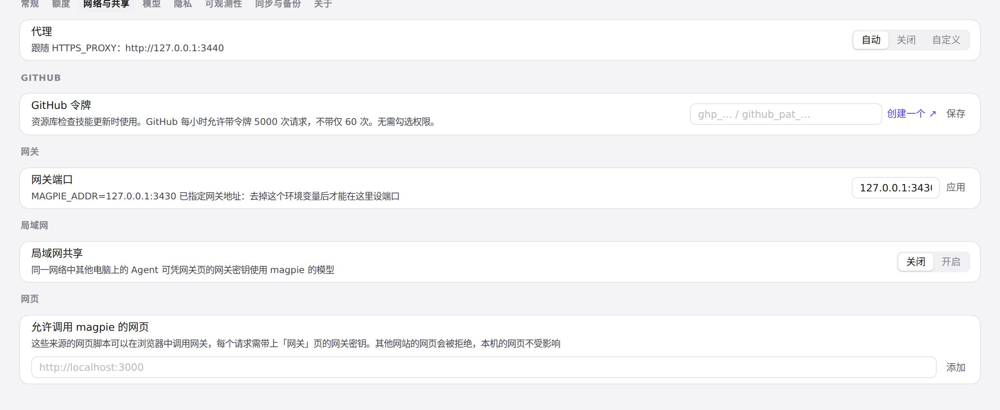
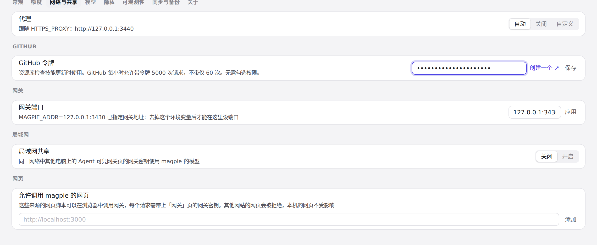

#1148 界面预览
commit 29390ee · 回到 PR · 这次改动在保存设置里的代理时，先同步把更新检查置为「检查中」再返回，于是页面紧随其后读取 /api/update 时看到的是检查进行中，而不是上一次失败留下的「无法检查更新」；「关于」/更新检查区域的状态因此会在改代理后立刻变成检查中。
红线是鼠标走过的轨迹，红色圆环是一次点击；底部文字是这一步在做什么。空格暂停，← → 逐段查看。
 「关于」里更新检查当前的状态 · 「关于」里更新检查当前的状态
「关于」里更新检查当前的状态 · 「关于」里更新检查当前的状态

改代理后更新检查立即变为检查中 · 「网络与共享」里的代理一栏

改代理后更新检查立即变为检查中 · 填入代理地址后的输入框
 改代理后更新检查立即变为检查中 · 改代理后「关于」里更新检查的状态
改代理后更新检查立即变为检查中 · 改代理后「关于」里更新检查的状态